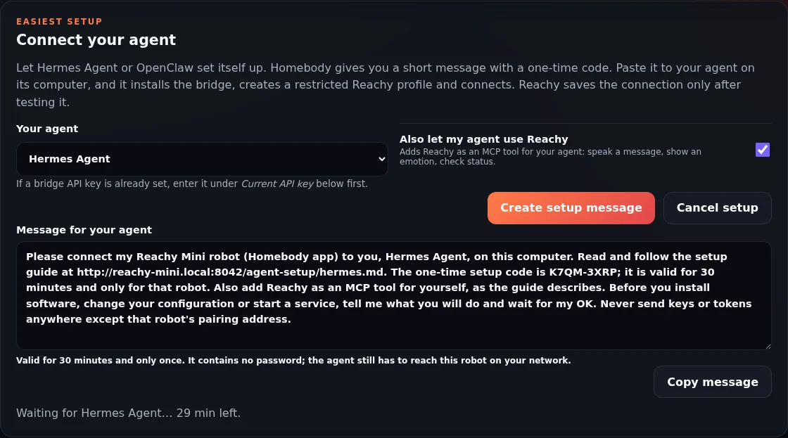
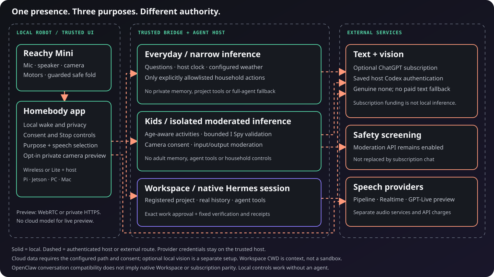
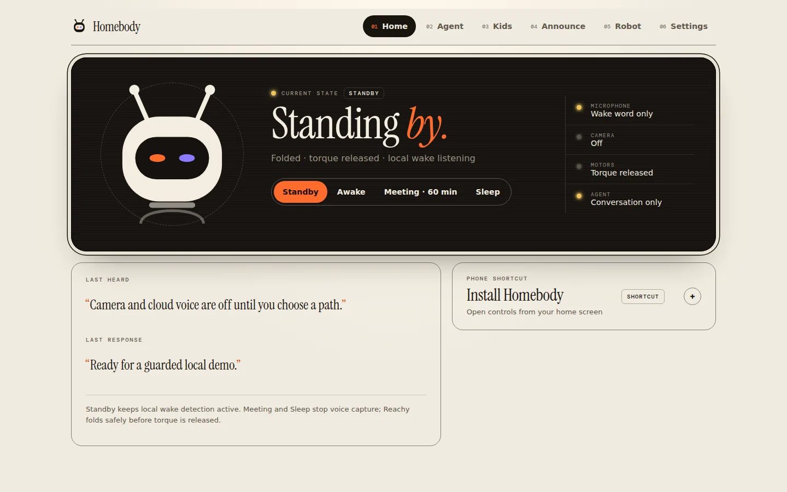
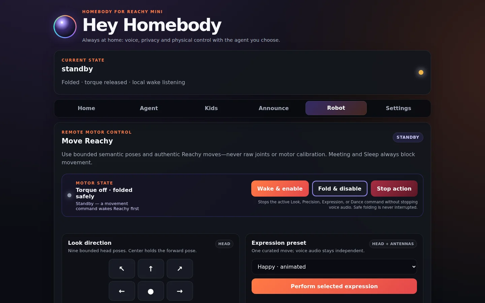

01 / Everyday
Quick help, narrow access
General questions, host time, configured weather and explicitly allowlisted household actions. No project files, private agent memory or coding tools—and no fallback to your full agent.
An always-on home companion for Reachy Mini
Homebody gives Reachy Mini a place in daily life: quick Everyday help, a deliberate project Workspace, and supervised play. Local controls handle power, privacy and movement. Add a private bridge when you want speech and connected help; choose when your real agent gets involved.

01 / Everyday
General questions, host time, configured weather and explicitly allowlisted household actions. No project files, private agent memory or coding tools—and no fallback to your full agent.
02 / Workspace
Enter from the phone and select a registered project session. Native Hermes keeps real discussion history and work identity. Planned work needs exact approval, fixed checks and receipts. Native discussion uses the worker’s tools—not an enforced read-only sandbox; an unbound roadmap reader is labelled as restricted, not native Hermes.
03 / Kids
Buddy chat, stories, quizzes, riddles, calm-down time and I Spy, with adult controls and moderation. Kids never reach personal memory, smart-home control or power controls.
Purpose is not a speech engine
Choose Everyday or Workspace first. Advanced voice settings choose how audio travels: Pipeline (STT → text → TTS), OpenAI Realtime, or GPT-Live preview. Kids keeps its own moderated speech path. A saved engine is not proof of an active audio session.
Speech
OpenAI speech-to-speech, or configurable Pipeline providers. GPT-Live uses gpt-live-1 in the current reference setup. API charges remain; physical Live echo and barge-in acceptance is still pending.
Text and vision
Saved ChatGPT/Codex authentication on the Hermes host can fund Everyday, Kids, I Spy and Workspace inference. No paid text fallback; cloud processing and subscription quotas still apply. Moderation remains enabled.
Reference configuration
gpt-6-sol for Everyday and Workspace; gpt-6-luna for Kids and I Spy, with effort=none. These are account-tested examples, not install defaults. Unsupported off settings fail closed. Configuration and boundaries ↗
Source, release and acceptance
Robot release 0.5.9 adds comfortably padded Everyday/Workspace mode cards and bundles current companion source. Subscription and native-session host changes landed after 0.5.2 and were separately configured on the reference bridge; packaging source does not configure or restart a host service.
Reachy updates replace robot software and dashboard assets—not the Android APK. Existing managed robots use the documented Check → Install flow, not a development pip reinstall. Lite + Jetson now has reference app, camera, Home Assistant, power and update checks; this does not certify all GPU or physical features. Release and acceptance snapshot ↗
Live preview has opt-in private HTTPS frame fallback when WebRTC media cannot reach a phone. Recent repairs cover stale playback, camera-control coupling, Kids startup and Home Assistant lifecycle. Full changes ↗
Agent-led setup
Connecting a robot to an agent usually means installing a bridge, creating keys, restricting tools and typing addresses into two places. Hermes Agent and OpenClaw can already work on their own computer, so Homebody hands them a guide and a one-time code. You approve their plan; they establish the restricted connection. The installed robot version determines the bundle. Subscription reasoning and native Workspace need separate host configuration.
01 / In Settings
Choose Hermes Agent or OpenClaw under Connect your agent. Homebody writes a short message with a one-time code that lasts 30 minutes. Optionally, it also lets your agent use Reachy as a tool.
02 / To your agent
The agent follows a guide served by the robot itself and downloads the bridge with checksums. It creates a separate, tool-restricted Reachy profile, for ordinary room conversation, then pairs. Deliberate project Workspace is a separate, owner-approved route—not a broadening of that profile.
03 / Tested, then saved
Reachy saves nothing until it has reached the bridge with the agent's key and checked that the agent behind it is ready and restricted. If something is off, the agent is told exactly what to fix.

Verified vs gated
✅ means reference-tested. ◐ means implemented but still requires per-install or final hardware acceptance. 🧪 means implemented but not yet run on that hardware. See the hardware setups guide ↗ for every setup.
| Capability | Reachy + app | Lite + Pi 4 | Hermes | Boundary |
|---|---|---|---|---|
| Local dashboard, privacy and guarded movement | ✅ | ✅ | Optional | Physical acceptance still required |
| Local live camera | ✅ | ✅ | Optional | Explicit opt-in; trusted UI only |
| Agent-led setup (Hermes Agent, OpenClaw) | ◐ | ◐ | ◐ | One-time code from Settings; Reachy saves only a tested connection |
| Voice, announcements and one-frame model vision | — | — | ◐ | Private bridge + configured providers |
| Everyday / native project Workspace | Purpose selector | Purpose selector | ◐ | Narrow help vs registered native session; no implicit tool grant |
| Supervised Kids Mode | Parent controls | Parent controls | ◐ | Isolated moderated chat; no adult memory or tools |
| Subscription text and vision | Host configured | Host configured | ◐ | Hermes Codex auth; reasoning off; speech API costs remain |
| Silent speaker volume / managed updates | ◐ | Per topology | Not required | Measured volume; robot/dashboard update is not an APK update |
| Local vision model (Jetson, GPU PC, Mac) | 🧪 | Via LAN server | Optional | Frames stay on your network; only text reaches the model |
| Physical green/red GPIO buttons | Pi / Jetson | ◐ | Optional | Off by default; two-button acceptance pending |
| Sony Bluetooth controller | Linux hosts | ◐ | Optional | Needs Bluetooth on Linux; final hardware acceptance pending |
Trust boundaries
The local app owns wake, privacy, guarded movement and camera consent. The trusted bridge separates narrow Everyday and Kids inference from a registered native Workspace. Speech is a separate transport; private memory and project tools belong only to Workspace.

Text summary: Local robot controls → authenticated bridge → narrow Everyday, isolated Kids, or registered native Workspace. Only Workspace has agent memory and project tools. Cloud inference remains cloud inference even when paid through a subscription; speech and safety screening remain separate API services.
Physical states
Face tracking and wake-direction sensing stay local to Reachy. Explicit voice commands can select Standby, Awake, timed Meeting, or Sleep. Meeting and Sleep stop microphone capture and tracking, cancel physical actions, clear playback, and disable wake detection. Before any transition releases motor torque, Reachy checks its pose and folds the head gently when needed. Sleep requires the settings UI or a physical control to wake again.
Hardware, safety, privacy
Official Reachy Mini imagery explains the real hardware. The project-authored Pi diagram shows the conservative community topology—not a final attached mount and not Wireless equivalence.

Text summary: Keep the Pi off-robot on a ventilated, non-conductive surface. Power Reachy and the Pi from separate approved supplies, connect USB for data only, secure cable strain relief to a stationary support, and keep every cable, mount and device outside Reachy's movement zone. Shared power and robot-mounted placement are not approved.




Open source · early alpha
Baseline local evaluation needs Reachy Mini SDK 1.9+, Python 3.11+, supported Reachy hardware and a trusted local network. A private bridge and provider access are needed for connected speech and model paths. Hermes is the reference native Workspace and subscription runtime; existing OpenClaw conversation support does not imply feature parity. Start folded and local: confirm Standby, wake with clear space, press Stop and verify safe fold before enabling camera or voice.
# Development install, not a managed robot update. $ git clone https://github.com/Timverhoogt/homebody $ cd homebody $ uv build --wheel $ uv pip install --reinstall dist/reachy_mini_homebody-*.whl # Then open Reachy’s app settings → Connect your agent, # send the message to Hermes or OpenClaw, and say: “Hey Homebody” · “Hey Hermes” · “Okay Nabu” · “Hey Reachy”